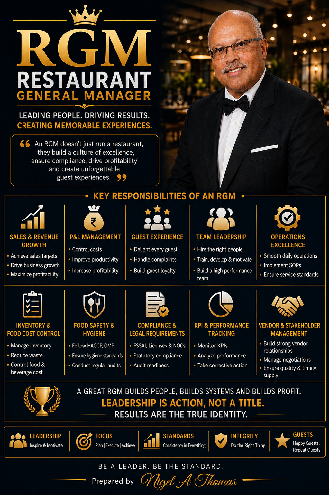

📚 Latest Hospitality Articles
Welcome to the Nigel Thomas Hospitality Blog. With over 30 years of hospitality leadership across hotels, restaurants, cruise lines and resorts, this resource centre contains practical guides designed for hospitality professionals, students, supervisors, restaurant managers, hotel managers, operations managers and general managers. Every article focuses on practical knowledge that can be implemented immediately in day-to-day hospitality operations. Topics include:
- Restaurant Operations
- Hotel Management
- Food Safety & HACCP
- Kitchen Operations
- Restaurant Leadership
- Hotel SOPs
- Food Cost Control
- Restaurant Technology
- Guest Service Excellence
- Career Development
- Food & Beverage Service
- Culinary Management
⭐ Featured Articles

Learn more about Nigel Thomas, his hospitality career, leadership experience across hotels, cruise ships, restaurants and hospitality consulting.
Read More →Discover the differences between Restaurant Managers and Operations Managers, including responsibilities, KPIs, leadership skills and career progression.
Read More →Stop waiting for month-end. Discover how a 10-day P&L control cycle catches hidden losses in food cost, labor, and menu mix before they destroy your margins.
Read Article →⚙ Restaurant Operations
Stop waiting for month-end. Discover how a 10-day P&L control cycle catches hidden losses in food cost, labor, and menu mix before they destroy your margins.
Read Article →